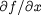
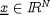
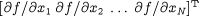
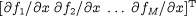
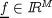
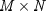
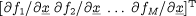
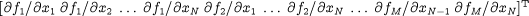

Scalar method (f) and scalar input (x)
This is the simplest case, in which the output is also a scalar equal to the derivative of the method with respect to the input:  .
Scalar method (f) and vector input (  )
In this case, the output will be a vector of length equal to the length of the input. Each element i of the output vector must be the value of the partial derivative of the method with respect to the ith element of the input vector. So DerivOutputs must be equal to  .
Vector method (  ) and scalar input (x)
) and scalar input (x)
In this case, the output must be a vector of length M. Each element i of the output vector must be the partial derivative of the ith element of the method with respect to the input. The DerivOutputs argument must therefore contain  .
Vector method (  ) and vector input (  )
)
This is the final possibility. In this case, the output is also a vector and its length must be  . The first N elements must be the partial derivatives of the first element of the method (f1) with respect to the N elements of the input , as in the second case above. The next N elements are then the partial derivatives of the second element of the method (f2) with respect to the N elements of the input. So the overall form of the DerivOutputs argument must be  . Fully expanded, this is:  .